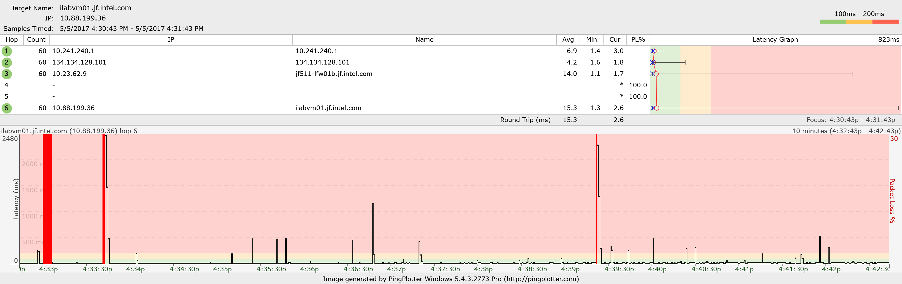
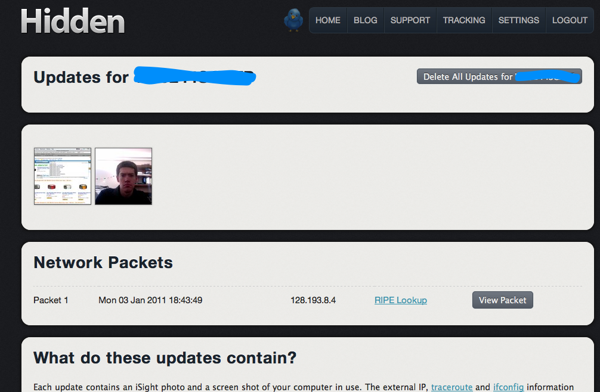

Table of Contents
All Things Computer
Fast Windows 10
Disable:
- Shadow Copies
- Windows Antimalware
- Search Indexing, etc
Wifi Adapter from TigardPC
Realtek something. Don't remember exactly, but it works on work laptop Windows 10 for some reason and not on the chunky Thinkpad..
Chrome search engine overwritten
And can't change it too. For OSX:
- Go to system preferences → Profiles → Delete all those bad profiles!
Windows Cloud Graphics VM
Mostly for fast CAD stuff. Paperspace has a good hourly one I think, except fixed $5/mo for 50GB of storage.
VPN Required?
Required is required even for HTTPS websites if you don't trust your personal router, which could also be hacked…
https://security.stackexchange.com/questions/1537/access-to-a-routers-gui
EFF got it wrong! https://news.ycombinator.com/item?id=22190821
Aunt Sarah Toshiba
I have the same issue. I used the exact method describe here - Windows 10 Media Creator to upgrade. As I cannot find the 64bit driver from manufacturer of my PC , I use the driver in the following link
https://driverscollection.com/?file_cid=42111963630741e5440da7ab2ae
It can allow to use 1280 x 800 resolution.
I downloaded this link before I upgraded from windows 7 to windows 10. Then I ran the program in W 10. Then I went into device manager and told it to update the Microsoft basic driver, looking in the c:\ATI directory for the section marked drivers, a sub directory, and eventually it found the ATI radeon X1200 driver. It took a few minutes to work, but once it did it, it retained and used that driver and W7 high resolution in W10.
Why Microsoft couldn't do this is beyond me. I now have an ancient Toshiba P200D running really well W10. It did help that I put in 250Gb SSD a year ago and maxed out the memory at 4Gb.
Maybe synaptics driver too?
Screenshot Ubuntu Mac
Changed the keyboard shortcut (pretty easy!) to ctrl + alt + 4
Wifi
Bummer.
One quick point, having it work great over wifi is a different beast than wired (what we focused on before but is hard to reproduce). Unfortunately it looks like 5ghz doesn't have as much range as 2.4ghz, but there's less potential for interference as there's less devices on it and there are many more channels (3 on 2.4ghz vs. 20 on 5ghz). https://www.metageek.com/training/resources/design-dual-band-wifi.html
Independent of that though, I think the best results will be from having a repeater (can be simply a router) near where Nate is planning to use his phone (I'm guessing upstairs). Quick aside: Wifi's range is intentionally stunted (water in air stops it) so that each small circle of houses can share the 3-4 2.4ghz channels instead of having to compete with the square mile of houses around them.  That's the way it's done at my work, lots of small focused (satellite-dish-like) wifi repeaters that have limited reception except underneath them, because you'd quickly run out of wireless channels to talk over otherwise.
That's the way it's done at my work, lots of small focused (satellite-dish-like) wifi repeaters that have limited reception except underneath them, because you'd quickly run out of wireless channels to talk over otherwise.
We can plug the “repeater” into a Power over Ethernet adapter upstairs. I have one in my room to the right of the desk, if needed. If Nate has a 5ghz modem/router with him, it should be able to be used as a repeater. Otherwise I have a 2.4ghz wireless N router next to my bed that can be tried out.
Also, Nate, what modem do you have? I have never heard that a modem can't be used on a slower connection. What made you come to that conclusion? Mom and Dad have Frontier, not Comcast.
*it was hard to reproduce the video chat stuttering that nate was seeing while someone else was lightly using the internet, even over a wired connection. That issue still remains, and assuming it's still an issue, I would recommend a newer router that has “buffer bloat” fixes (I have some more info on that)
Buffer bloat
Tests: https://www.bufferbloat.net/projects/bloat/wiki/Tests_for_Bufferbloat/
Why multiple users on home router can cause issues.
- Quick fix is to limit the outgoing bandwidth ~10-20% to prevent the internal buffers from filling up. No clue why that fixes things though.
- Better fix is to get a router that supports better buffer management. Apparently implemented in both OpenWRT and DD-WRT, but not necessarily off the shelf routers yet.
- Counter-intuitively, doubling your out-bound bandwidth can make your latency much worse! Weird. https://gettys.wordpress.com/category/bufferbloat/
Windows Password Change
// From administrator cmd prompt net user nhergert *
Redshift on Ubuntu
https://askubuntu.com/questions/482373/how-do-i-install-redshift-in-ubuntu
- Write to ~/.config/redshift.conf
[redshift] ; Set the day and night screen temperatures temp-day=5800 temp-night=3800 ; Enable/Disable a smooth transition between day and night ; 0 will cause a direct change from day to night screen temperature. ; 1 will gradually increase or decrease the screen temperature transition=1 ; Set the screen brightness. Default is 1.0 ;brightness=0.9 ; It is also possible to use different settings for day and night since version 1.8. ;brightness-day=0.7 brightness-night=0.5 ; Set the screen gamma (for all colors, or each color channel individually) gamma=0.9 ;gamma=0.8:0.7:0.8 ; Set the location-provider: 'geoclue', 'gnome-clock', 'manual' ; type 'redshift -l list' to see possible values ; The location provider settings are in a different section. location-provider=geoclue2 ; Set the adjustment-method: 'randr', 'vidmode' ; type 'redshift -m list' to see all possible values ; 'randr' is the preferred method, 'vidmode' is an older API ; but works in some cases when 'randr' does not. ; The adjustment method settings are in a different section. adjustment-method=randr ; Configuration of the location-provider: ; type 'redshift -l PROVIDER:help' to see the settings ; e.g. 'redshift -l manual:help' [manual] lat=43 lon=1 ; Configuration of the adjustment-method ; type 'redshift -m METHOD:help' to see the settings ; ex: 'redshift -m randr:help' ; In this example, randr is configured to adjust screen 1. ; Note that the numbering starts from 0, so this is actually the second screen. [randr] screen=0
2014 Macbook Pro?
$100 on CL, needs a $100 SSD
Something about those years have a custom SSD. Weird. https://www.amazon.com/Cablecc-16pin-Macbook-M-Key-Convert/dp/B073GVNPR2/ref=sr_1_8?s=electronics&ie=UTF8&qid=1517366843&sr=1-8&keywords=A1502+ssd read the comments further down. Or just get a 128GB known working one on ebay.
How to create OS X USB Flash drive boot disk
Linux VM
Ishaan recommends boxes in Fedora. Not sure what it's using under the hood though.
VNC Server, basic startup is with vncserver :1 -geometry 1920x1080 &
Performance
Compiling
Why does a ram disk help?
- Windows ram disk with powershell: http://model-technology.com/creating-a-ramdisk-in-server-2016-for-io-benchmarking/
- Linux ram disk:
It's recommended you make a ram disk of your output directory. Nolan saw only 300MB out of 1024 getting used for a SIM build. sudo mount -t tmpfs -o size=1024m tmpfs ~/mgmt/cr_mgmt/output/ Confirm with df -h Unmount it before deleting the repository so you don't bork the server (smile) sudo umount ~/mgmt/cr_mgmt/output/ * If you do bork the server, you probably want to read https://serverfault.com/questions/777299/proper-way-to-deal-with-corrupt-xfs-filesystems and eventually and carefully run xfs_repair -L /dev/dm-2, which will forcefully fix and wipe the filesystem history for the /home partition (/dev/dm-2)
One use case
Don't really understand it though, looking back So…when you've got two programs writing 0's sequentially to a bunch of memory (3/4 of RAM, say), why can't the kernel of Linux or Windows manage it well?
- Linux swappiness seems like it might help https://help.ubuntu.com/community/SwapFaq#What_is_swappiness_and_how_do_I_change_it.3F and https://askubuntu.com/questions/1357/how-to-empty-swap-if-there-is-free-ram
- Monitor page faults on linux:
ps -eo min_flt,maj_flt,cmdfrom http://blog.scoutapp.com/articles/2015/04/10/understanding-page-faults-and-memory-swap-in-outs-when-should-you-worry
Use case was Simics Windows CR boot eating up RAM like crazy, but Linux not handling it well. Simics only ran “dump ram to disk” once memory was used up, so it could be stuck at close to max RAM amount forever even though it wasn't using it.
- Try telling simics to use more than system RAM?
- Maybe it's the thrashing between different users? Doesn't make sense
- What is the
Network
Ping plotter (free edition?!) is super helpful. In this case, the delay is not from the router, but something deeper in the network… 
{kind=link}
Gping didn't do this.
Making image of hard drive
On Antivirus
Levi's advice: Determine how much valuables you have on your computer and protect it accordingly.
Cylance seems pretty cool, demo videos showing it running much faster than McAfee and started by former CTO of Mcafee. However, marketing is failing and not doing a fair comparison to Sophos. https://blogs.sophos.com/2016/06/29/thoughts-on-comparative-testing/
OS X Fails
| Name | Fix |
|---|---|
| Can't use this drive for booting / can't do partitioning in Disk Utility (even though you just erased the disk in Disk Utility | Run diskutil list and find the name of the drive. Then run diskutil erasedisk jhfs+ Foo GPT /dev/disk42 |
Windows fails
| Name | Fix |
|---|---|
| The Group Policy client service failed the login | * No admin access allowed for user * User profile probably got corrupted. Delete user profile (double check what you're deleting probably contains browser bookmarks and other useful stuff) * Let your tech do the above steps because he's got magic hands |
Unetbootin
Generally works. Screwed up my chromebook though as it thought the internal flash drive counted as a USB drive.
OS X
Still-outstanding bug with OS X where you have to name the partition FAT32 and partition in the MS-DOS (FAT) with GUID scheme. https://github.com/unetbootin/unetbootin/issues/46
Microsoft Remote Desktop Client for Linux
Use Remmina and install freerdp plugin for windows rdp. Jonathan said so.
Mac forgets wifi
Might have to do with CMOS battery and main battery dead, but other options are below:
- Delete keychain entries
- Create new network with same name, but with encryption. (for some reason, it's saving a network with no encryption and seeing it's wrong or something)
- NOTE: Seems to be fine after installing El Capitan. Weird…
Windows Remote Desktop
Clipboard doesn't work
Kill rdpclip.exe on both sides and restart. Worked for me!
Query session doesn't work
HKLM\SYSTEM\CurrentControlSet\Control\Terminal Server
Then add a DWORD value named “AllowRemoteRPC” and change its value to 1.“
In my case it was set to “0”. I changed it to 1 and all was good.
FFMPEG command
No re-encoding trimming of edges
ffmpeg -i in.mp4 -ss [start] -to [endtime] -c copy out.mp4
To convert from avi to other formats using FFMPEG: Settings for AVC1 or libx264 ffmpeg -i face.avi -c:v libx264 -crf 18 face_compressed.mp4
Image sequence to movie. Finally got it working. Can use offset, but be sure to run from a batch file so the double percent sign works…
ffmpeg -i IMAG%%04d.jpg -start_number 0 foo.mp4
OneTab
Goes blank when you launch it and it's the only window.  Also need to back up AppData just in case…How to do efficeintly?
Also need to back up AppData just in case…How to do efficeintly?
Efficient Storage
Deduplication
Great for incremental builds with lots of similar output files. Zip doesn't do this as their window size is <64K I guess. 7zip does by default though.
FreeNAS says to do compression instead with lz4 unless you have 5GB RAM for each 1TB of disk. http://www.freenas.org/blog/freenas-worst-practices/. Sounds like some implementation differences. And then forum people don't like it either! https://forums.freenas.org/index.php?threads/lz4-compression-enabled-by-default.20260/
Remote Differential Compression
If you're sharing files over a long haul internet connection, say to Poland, it's really nice to have remote differential compression enabled. It's pretty cool, it uses “shards” from nearby similar files to really only send the parts that change on either side of the connection. It's a feature in Microsoft's Distributed File System. More to read about too.
- I'm quite sure there's a similar concept in other distributed file systems.
Overwrite small section in image
// HEX offset OFFSET=524288 //apparently dd doesn't like hex 0x80000 // Count seek in bytes dd if=arch/arm/boot/zImage of=~/<SECRET_INTEL_MACHINE>.ima oflag=seek_bytes seek=$OFFSET conv=notrunc
Local connection between two machines
Two usb nic's, or an ethernet crossover cable. Assign unique local IP addresses. Enable in Win+Pause or My Computer, right click → properties. There are remote desktop settings there that you can use.
Or if you really need KVM over USB, NOTECONS01 is good.
Setup OS automatically
Linux
Most OS'es support a kickstart file. You start a USB drive with your OS installer, but point to a kickstart file that knows what to install and setup.
Intel Poland kickstart file: https://sv-gitlab.igk.intel.com/sv-cloud-images/fedora27-base/blob/dev/kickstart.cfg.envtemplate
Also, internal release for CR: http://crsw-dev.amr.corp.intel.com/craff/
Windows
Mathew (Matt) Bliss:
I am just using the Microsoft deployment toolkit. SCCM gives the ability to further customize the installation. I have never used SCCM, so I am not sure what it adds the process. I am pretty sure it also manages the configuration post deployment.
Install SSD / Advanced Recovery of NTFS
The RIGHT Way
Figure out if they have a 2.5 or 3.5 bay. Buy this adapter or this adapter if needed.
- Ask to turn off drive encryption (eases with recovery if needed, but not necessary as much if making backup). Doing backups is easiest from the recovery cmd console or from Windows DVD.
// Skip repeats, Skip errors, yes go recursively, overwrite all xcopy <src> <dest> /dcsey
- Ask to borrow hard drive overnight. Or, come back the next day after letting it back up overnight.
- Make backup first. Will take ~30 seconds per GB at 20MB/sec, which means 8 hours for full 1TB hard drive. Not so bad, just 24-hour turnaround.
- Requires same size or bigger drive at home to backup to
- Working off your backup copy, permanently delete the big data off the partition (that you'll keep on the original drive as an external drive) and shrink the partitions down to SSD size.
- Work off the backup copy
- Resize partitions down to SSD size using a modern version of gparted that is better. Will probably need to move them too to get final size of all partitions below size of SSD so you can do an exact copy using dd below. Permanently delete the big data off the partition (that you'll keep on the original drive as an external drive)
Then do:
sudo fdisk -l //list partitions dd if=/dev/sd<src> of=/dev/sd<dest> count_bytes=<compute to the last partition>
The WRONG Way
So…I was working on a family friends computer and upgrading to an SSD. Which meant shrinking their HDD partition from ~1TB (100GB used) to 240GB (~ssd size). Seems like you have to run gparted first to resize NTFS partition smaller, then do clone.
Anyways, gparted said “running simulation”, and I thought, “by golly do the real thing and quit looking so hung!” so I killed it. Unfortunately, it was actually moving stuff around and changing the partition table already, so now I have a lot more work to do…
Making a complete clone right now using ddrescue.
//Windows live cd chkdsk. Assumes volume is not RAW diskpart list volume chkdsk /f <volume> <volume>: bootrec /fixboot //installs bootloader
- If volume is RAW (ntfs header lost), need to fix using testdisk in Ubuntu like this
Look into NTFS MFT recovery?
- GENA visualization tool.
- Look at disk bytes in Linux (make an image): https://major.io/2010/12/14/mounting-a-raw-partition-file-made-with-dd-or-dd_rescue-in-linux/
- ntfsresize.c (source code of ntfs resize). Might want to compile with debugger / look at with simics on NTFS image.
- Look at IOs with strace (check forks with strace -f) or iosnoop
- Maybe …. use testdisk examples: http://www.cgsecurity.org/wiki/Data_Recovery_Examples and http://www.cgsecurity.org/wiki/TestDisk_and_PhotoRec_in_various_digital_forensics_testcase
Might want to look into later
- Scenario: File system Resize is killed in middle, but partition is resized for some reason. (like it inexplicably was above)
- Would Windows find files from MFT that are no longer in the partition?
- Ended up using
sudo parted /dev/sdb resizepart 1 400Mto resize the partition back and then run chkdsk.
- gdisk (only really usable from linux because you can provide /dev/sdb as opposed to windows' “Disk 1”???!) is super helpful for recovering a corrupted GPT header. Used when recovering external hard drive when Jay's Windows 10 upgrade corrupted the GPT header.
- Documentation on usage: https://www.rodsbooks.com/gdisk/repairing.html
SSD Ratings
Remote Wipe and Flash machine
PXE, use CloneZilla
OS X special conversion from case sensitive to case insensitive. iPartition ($$), Carbon Copy Cloner gives 30 day trial.
- Need to skip Volumes folder when copying so it doesn't recurse. Clone case sensitive and then copy from there (SSD1 → SSD2) while booting off of / (original)
Windows Remote Desktop Stuff RDP
Need to enable it in Windows + Pause / right click My Computer → Properties menu, on the left hand side.
Great tips on this windows help site: https://support.microsoft.com/en-us/kb/2477176
Wanted only 1 user logged in at a time, but allow reconnections of same user (wifi and wired). What didn't fix it was “automatic reconnections” and “allow multiple logins?” (which worked, but allowed another user to logon at same time). What fixed it was setting keep-alive interval to 1 minute, which neither keeps the previous session alive nor takes 1 minute. Go figure!
- Click Start, click Run, type gpedit.msc, and then click OK.
- Expand Computer Configuration, expand Administrative Templates, expand Windows Components, expand Remote Desktop Services, expand Remote Desktop Session Host, and then click Connections.
- In the right pane, double-click Configure keep-alive connection interval.
- Click Enabled, and then click OK.
- Close Group Policy Object Editor, click OK, and then quit Active Directory Users and Computers.
Windows Monitor File Changed
Podcast
Overcast. Jerry at Harvest told me it. Thanks Jerry! iPhone only though
- Android would be AntennaPod
Laptop
https://www.productchart.com/laptops/ Graphical scatter plot of the different laptops
In 2018:
| Laptop | Use Case | Notes |
|---|---|---|
| Acer CB3-111 | Low-power home server | |
| Macbook 2008 | General computing | Feels nice, but battery lasts 10 minutes |
Do I want a chromebook during traveling? Yes, really sucks to figure out schedule from a phone screen, and not all hostels/libraries have accessible computers. Also, lets you read anywhere if desired, on battery all day, with no worries.
- Interesting thing though, I have a Chromebook already! Just need to spin up a container on Macbook and let it run, right? Because I like that keyboard and setup too. Feels solid.
Chromebook
Gallium OS
https://wiki.galliumos.org/Firmware (need to set the default mode to legacy)
Great OS, basically as fast as original Chrome OS. An alternative is Gallium OS, full Linux and just as fast.
https://wiki.galliumos.org/Installing/Baytrail
Summary/details of the wiki steps:
Log in as Guest CTRL+ALT+T , then type in shell for a shell prompt Need to do “sudo su” to get write access.
Overwrite firmware: cd; curl -LO https://mrchromebox.tech/firmware-util.sh && sudo bash firmware-util.sh Use RW_LEGACY firmware. But can use full firmware if you undo the write protect screw inside laptop.
https://wiki.galliumos.org/Installing (ISO or alongside chrome os)
Install Gallium OS (need to run this twice) curl -Os https://chrx.org/go && sh go
There are a few remaining steps:
- Go to settings somewhere and enable auto-login. I forgot specifically how I did this…I will double check tonight.
- Copy the ~/Downloads/arduino-1.8.2 folder and the desktop script to a flash drive and paste it on the new laptop in the same place
Also, the username and password for chrx is chrx for both.
To do the auto-login, open a terminal and run “sudo mousepad /etc/lxdm/lxdm.conf” and change
#autologin= to autologin=chrx
How to turn off screensaver password, or just disable screensaver totally? I did it already too…
Drained battery on Chromebook
Will erase boot flags. Tried running a reset of flags based on this, https://www.reddit.com/r/GalliumOS/comments/8m6n7k/how_can_i_keep_my_galliumos_once_the_battery_drain/dzl8lwq/, but didn't work. So just reinstalling Chrome OS so I can run the script to update the flags then reinstall Gallium OS.
Chrome OS
On sale this year is Dell Inspiron 11 3000. Windows, so slow, but maybe Ubuntu is better.
Debugging system crashes
Logs are stored at chrome:system or at file:/var/log
- Found something this time related with
pcm_avail returned frames larger than buf_size: 24320 > 24000before the crash…might be helpful. - This is still kind of annoying, but I like the easy-to-use features of Chrome OS too…
Missing keyboard shortcut notes
| Key | Combo |
|---|---|
| Home | Ctrl+Alt+Up |
| End | Ctrl+Alt+Down |
| Page Up | Alt+Up |
| Page Down | Alt+Down |
| Delete | Alt+Backspace |
Developer Mode
- Netflix won't work if dev mode is enabled
 Otherwise, seems useful as it allows you to boot
Otherwise, seems useful as it allows you to bootfrom USB/SD card Ubuntu and whatnot(only signed Google images), and modify the files on the Chromebook, just what I need! No package manager though. - Code editor for Chrome OS Chrome OS Caret
Chrouton
| Ctrl+Alt+Shift+→ | Switch back to Chrome OS from xfce |
| Ctrl+Alt+← | Switch to xfce |
Laptop / Chromebook
My current laptop is great, but fan is loud. GET OVER IT. EARPLUGS
Reading in bed? GO TO BED!
Heavy? IT'S ONLY 3 MORE POUNDS. GET A SPINE
Only lasts 3 hours? GREAT! ALL THE MORE REASON TO FOCUS!
Get real work done first.
Haswell is latest in low-power Intel chips. It's only about $250 to change laptops if you need to.
Get at least 13” for maximum space. 1400 X ___ is fine (current laptop is that).
White is better as it blocks sweat stains visually better?!?! I don't know…
Chromebrew has packages for Chrome OS? Also, Chrouton loads Ubuntu OS onto hd at same time…
- Looks like CoreBoot now supports CB3-111, so Ubuntu can load natively, but nixes your opportunity to load ChromeOS again.
Software Uses
- Ubuntu with GUI would be nice for searching PDF's (recoll and friends)
- Taking notes
Important
- Lightweight <2.5 pounds for sure, might be nice
- Front palm area not too small
- Repairability (at minimum, ssd and battery)
Maybe
- Intel chip for Dropbox and pre-done Ubuntu packages???
Not Important
- Battery > 3 hours
Security (Linux)
Hardening Linux tips https://github.com/lfit/itpol/blob/master/linux-workstation-security.md
Wipe Disk
Most of the windows options are “pay to run”, but dd (on cygwin) works pretty well! For some reason, it didn't work writing to the disk, but making a 120GB file on the disk was fine.
dd if=/dev/random of=/cygdrive/d/wipe_file.txt
Disk Usage
WizTree is best, uses Windows Master File Table directly. Scanned entire spindle drive in 15 seconds. TreeSize hangs machine. WinDirStat is most basic.
- Turn off file extensions and TreeMap display (F8 and F9) and it won't seem to freeze up in the middle. https://bitbucket.org/windirstat/windirstat/issues/112/windirstat-runs-out-of-memory
What port?
What process is running on what port? netstat -tulpn | grep :8080
Environmental Variables
Ubuntu
Most people use /etc/environment file.
Unix locks
sudo lslocks
Apparently update process was configured to run daily and on startup. >.<
iPhone as Remote Control to Ubuntu
For some reason, Ubuntu >14.04 broke VNC sort of stuff. So, running x11vnc instead. Hippo LITE on iPhone side.
Cron setup (unix)
Edit cron file of specific user with crontab -u www-data -e. Run every hour two things in order with:
0 * * * * cd /var/www/html/homerot/ && /usr/bin/python assertHourlyUpdate.py
Proxy
Fiddler proxy comes highly regarded and easier to set up than Shark.
Lightweight Fast Webserver
Mongoose fits the bill nicely, but is only HTTP (you must pay for PHP, etc). Xampp Lite fits that bill nicer, but it is 30MB download.
Rip DVDs
Use MakeMKV. Large file sizes (keeps same size as original DVD, so 4-5GB), but keeps all original features and I can always convert it down later.
Copying Files
Windows: Robocopy looks to be the best.
Power Usage
Getting a Static LAN IP
Not that hard to do. Ideally your router should do it, but if not you can do it from the client-end too. Make sure to set gateway as the router and set DNS to be the router as well. Best to set it up with a system where you aren't remotely connected in case it doesn't work. 
Doing image iso stuff
Rufus looks like a great tool, windows only though.
Upgrade Pam F.'s Macbook Pro
Her DVD drive broke, which makes this hilariously difficult. dmg2img does not work. I extracted the Mountain Lion dmg from a Mac Store download. Windows will only mount ISO though, so:
- DMG→ISO in OS X (simple, recommended)
- DMG→ISO in Windows (annoying, long): Extract files from DMG using 7-zip and create ISO using imgburn portable (portable avoid the dumb install spam stuff).
Remote Install using Windows instructions, troubleshooting.
- Save off Safari/Firefox/Chrome tabs and history. Deactivate iTunes and Adobe.
- Do the above.
- Try to selectively recover her files and preferences/history from Time Machine, not all the cruft.
TeamViewer looks like a great remote desktop support option! No funky port forwarding, better than Google Chrome Remote Desktop if you want to not get kicked off after 10 minutes of inactivity and to be able to connect unattended. Also has file transfer built in and video recording.
- However, file transfer is 1/2 the speed of FTP, so just download XAMPP and do remote FTP/HTTP file transfer. (still have to configure the port on your router though)
- Also, it's free for home / personal use.
Other stuff
- The Case of the Sloooow System, really deep walkthrough using Windows' Process Explorer to debug why a computer is running slow. Turns out to be related with Flash and Roxio?! Really good to know, and probably be better to switch to Isoburner at that point!
Thinkpad
- Oiling the fan on my Thinkpad. Blog with Pictures and datasheet
Ubuntu
Key Remapping!
Web Stuff
- Backing up a website: http://superuser.com/questions/14403/how-can-i-download-an-entire-website (WinHTTrack works well)
// Src Dest Don't go outside bounds of website verbose // | | | | > httrack "http://www.all.net/" -O "/home/nhergert/websites/www.all.net" "+*.all.net/*" -v
Teaching
- ScreenCast-O-Matic, great, free screencast tool written in Java and runs online for some reason.
- If under Intel Firewall, try Icecream Screen Recorder
Mac
iPhone
- It's being annoying right now. Won't sync and stuck on iPhone screen! http://www.mac-forums.com/forums/ios-apps/115356-updated-my-iphone-now-wont-show-itunes-3.html
Hardware Fixes
- The hinge started squeaking and cracking-ish noises when I closed it in intervals after a while. Turns out the fix is just tightening the screws on the underside near to the hinge. Good to go :)
Quick Tips
- http://www.askdavetaylor.com/dashboard_widgets_on_my_mac_os_x_desktop.htmlMake Dashboard items always stay on screen: (turn on dev mode and hold F4 (or F12 on ext keyboard) whilst clicking the app and set it where you want to)
Quick Tools
 Skitch seems like a really good quick photo / screenshot editing program.
Skitch seems like a really good quick photo / screenshot editing program.- PreyProject, free, and very similar to Hidden.
- Hidden App, great for finding a lost Mac-only computer. Takes photo of user and uses SkyHook for localization.
- Running (and installing) Wine on Mac! 600 diggs
- Cronnix Quick GUI Cron Script editing! (great for autosaving stuff like git commits)
- Seashore is a good quick image editing app (easier than GIMP in my opinion)
- Thumbs Up image resizing app
- Disk Inventory X (shows graphically disk usage by folder)
{kind=link}
Terminal
Web Server
Troubleshooting
- Consultant's Canary. Shows all loaded stuff.
- Show *all* running processes sorted by cpu
top -o cpu
- Apple Developer Tools: Shark (hard-core thread monitoring). Quartz Composer.
Annoyances
- kernel_task taking 30% CPU? Penryn Solution
- Reset SMC? Doesn't work for me :(
- Stop Spotlight from indexing external drives:
touch /Volumes/NOLAN_FLASH/.metadata_never_index
- Tell Chrome to not open PDF's (corrupts them when you “save page”): Disable PDF Viewer plugin in Chrome plugins…
Useful Programs
Chrome Extensions:
- AdBlock, FlashControl, YouTube Downloader
AVR/Coding
–Git, CrossPack –CoolTerm –FileZilla
OS X Programs
–Dock: TotalFinder, Flux, Droplr, Dropbox, Menu Meters, Caffeine –Editing: Smultron / TextMate, –Documents: Office for Mac (especially Word, need to port that over to dokuwiki), iWork –FlowChart Software? –VLC, Steam, Skype, Matlab
- Mac has great built in diff tool called FileMerge
Terminal
- See Scripts
Evenutally
–Install Wine, Arduino, Processing, –Re-Install Windows 7 with VirtualBox? –Remote Desktop with CoRD –MindMapping with Dia? –Disk Scanning with Disk Inventory X